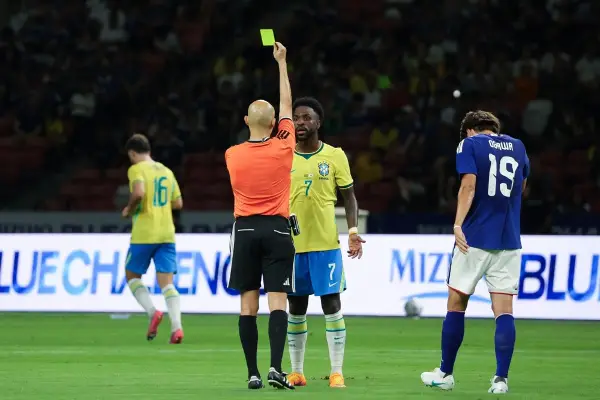
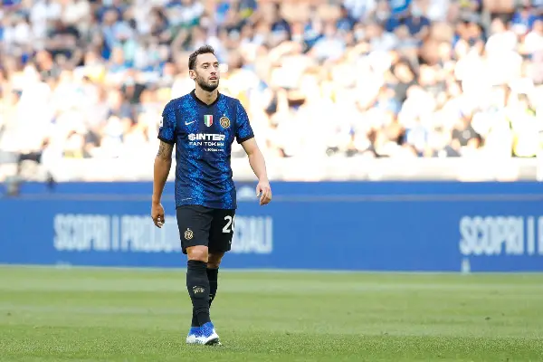
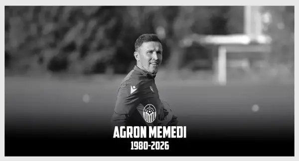
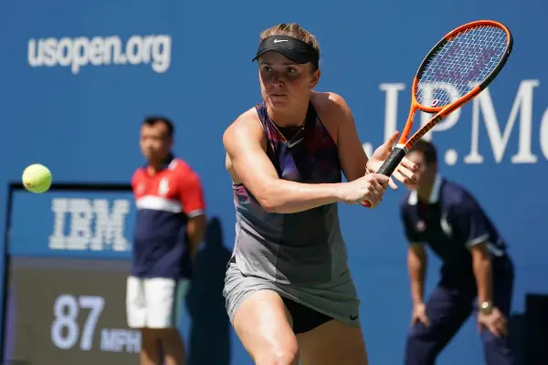
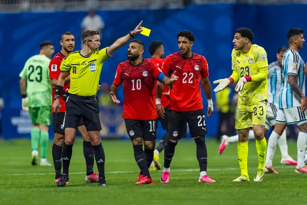
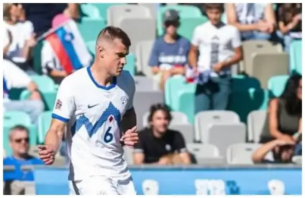
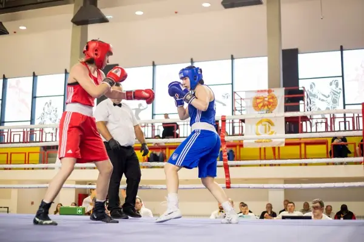

Спорт

(Видео) Евроголовите на Винисиус се мала утеха, Јапонија го шокираше Бразил
Во 91-та минута по третиот гол на Бразил, поради бурни протести беа исклучени селекторот Карло Анчелоти и Рафиња, кој играше до 70-та минута. Стрелци за Јапонија беа Такефуса Ку...

Фенербахче подготвиле 10 милиони за Чалханоглу
По Ромелу Лукаку и Мејсон Гринвуд, Фенербахче ќе се обиде да го обезбеди потписот на Хакан Чалханолу, кој не сака да ја продолжи кариерата во Италија. Ова лето, Фенер веќе потро...
На само 45 години почина поранешниот фудбалски репрезентативец Агрон Мемеди
Мемеди долги години работеше во фудбалскиот колектив на Шкендија, а како фудбалер има настапувано за екипите на Ренова и Металург. Ненадејно, почина поранешниот македонски репре...

Почина Агрон Мемеди, поранешен македонски репрезентативец
Денес, нашиот клуб загуби еден од своите луѓе, човек кој беше дел од црвено-црното семејство, прво како фудбалер, а потоа и како дел од техничкиот штаб. Во Тетово денес почина п...
Прво злато за Македонија, Узеир е европски шампион во кик-бокс
Македонија го освои првиот златен медал на Европското кик-бокс првенство за сениори во Скопје, откако Нелсон Узеир. Златен медал за Нелсон Узеир, а сребрените медали ги освоија ...
Почина поранешниот репрезентативец Агрон Мемеди на 46 години
Македонскиот фудбал е во шок по ненадејната смрт на некогашниот репрезентативец и член на стручниот штаб на Шкендија, Агрон Мемеди, кој почина на 46-годишна возраст. На 46-годиш...

Свитолина ја елиминирас Сабаленка од Завршниот мастерс
Свитолина, која ја заврши групната фаза со две победи и еден пораз, во полуфиналето ќе се соочи со Линда Носкова, која ја освои втората група, додека Мира Андреева (резултат од ...

(Видео) Салах со паненка до рекорд и слава
Салах го постигна својот 70-ти гол за репрезентацијата во квалификацискиот натпревар за Африканскиот куп на нации против Малави. Голот што влезе во историјата го постигна Салах ...

Словенија доаѓа по победа во Скопје, ама без главниот стопер!
Словенија одигра 0:0 со Швајцарија на домашен терен и со тоа ја зачува втората позиција на табелата во нашата група од Лигата на нации. Нашиот следен ривал, кој во понеделник го...

Со полуфиналните борби продолжува 55. „Златен гонг“
Во Скопје боксуваат и Румен Руменов од Бугарија, европски бронзен медалист У23 од 2024, Хамза Рашљанин од Србија, европски бронзен медалист У19 од 2024, и Башким Бајоку, кој за ...